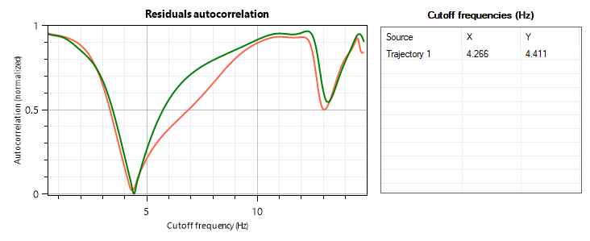

Linear and angular kinematics¶
Introduction¶
To measure linear or angular speed and other kinematics quantities follow these steps:
Establish a line or plane calibration.
Compensate for lens distortion.
Track a point trajectory or track an object containing an angle.
The measured data can be displayed in two ways:
Directly on the object.
In a dedicated kinematics diagram.
To export the data, use the export options in the kinematics diagrams.
To display the measurement as a label attached to the object, right click the object and choose an option under the menu. Each measurable object has specific options based on the quantities it can measure.
Note
The data displayed directly on objects use raw coordinates whereas the kinematics diagram uses the (optional) filtering mechanism.
Kinematics diagrams¶
The following kinematics diagrams are available:
Data filtering¶
Rationale¶
Due to the digitization process the raw coordinates are noisy and the resulting quantities, especially derivatives like speed and acceleration, are less accurate than they could be. Carefully filtering the coordinates remove a lot of this noise and provide more accurate measurements.
Data shown in the kinematics diagrams is computed using filtered coordinates. This filtering can be disabled under .
Filtering mechanism¶
The coordinates are passed through a low pass filter to remove noise. The filter does two passes of a second-order Butterworth filter. The two passes (one forward, one backward) are used to reset the phase shift 1.
To initialize the filter, the trajectory is extrapolated for 10 data points on each side using reflected values around the end points. The extrapolated points are then removed from the filtered results 2.
The filter is tested on the data at various cutoff frequencies between 0.5Hz and the Nyquist frequency. The best cutoff frequency is computed by estimating the autocorrelation of residuals and finding the frequency yielding the residuals that are the least autocorrelated. The filtered data set corresponding to this cutoff frequency is kept as the final result 3.
The autocorrelation of residuals is estimated using the Durbin-Watson statistic.
Cutoff frequency visualization¶
For trajectories, the cutoff frequency can be visualized in the About tab of the diagram dialog. The calculated cutoff frequency depends on the data and is different for each trajectory object.
Footnotes
- 1
Winter, D. A. (2009). Biomechanics and motor control of human movements (4th ed.). Hoboken, New Jersey: John Wiley & Sons, Inc.
- 2
Smith G. (1989). Padding point extrapolation techniques for the butterworth digital filter. J. Biomech. Vol. 22, No. s/9, pp. 967-971.
- 3
Challis J. (1999). A procedure for the automatic determination of filter cutoff frequency for the processing of biomechanical data., Journal of Applied Biomechanics, Volume 15, Issue 3.